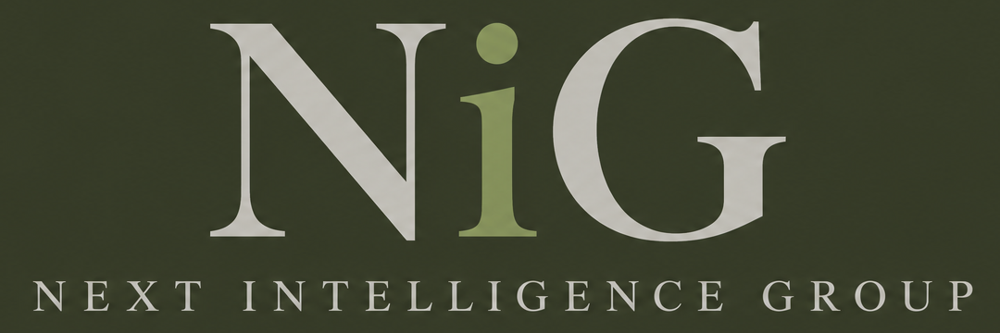

Orientierung
Wo kann KI in Ihren Abläufen entlasten, und wo lohnt sie sich nicht? Wir bewerten Möglichkeiten nüchtern und nach Aufwand und Nutzen.

Wir beraten kleine und mittlere Unternehmen zu den Möglichkeiten von künstlicher Intelligenz, führen passende Lösungen ein und betreuen die IT dahinter. Auf Wunsch läuft die KI im eigenen Netzwerk, sodass Ihre Daten im Haus bleiben.
Wo kann KI in Ihren Abläufen entlasten, und wo lohnt sie sich nicht? Wir bewerten Möglichkeiten nüchtern und nach Aufwand und Nutzen.
Von der Auswahl über die Einrichtung bis zur Schulung: Wir setzen KI-Lösungen so auf, dass Ihr Team sie im Alltag nutzen kann.
Lokale KI im eigenen Netzwerk, ohne Verbindung nach außen. Sie entscheiden, welche Daten die KI sehen darf.
Microsoft 365, Server, Backup und Betreuung: das technische Fundament, auf dem KI sinnvoll aufsetzt.